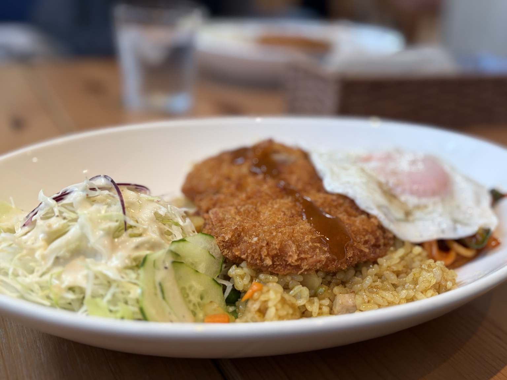
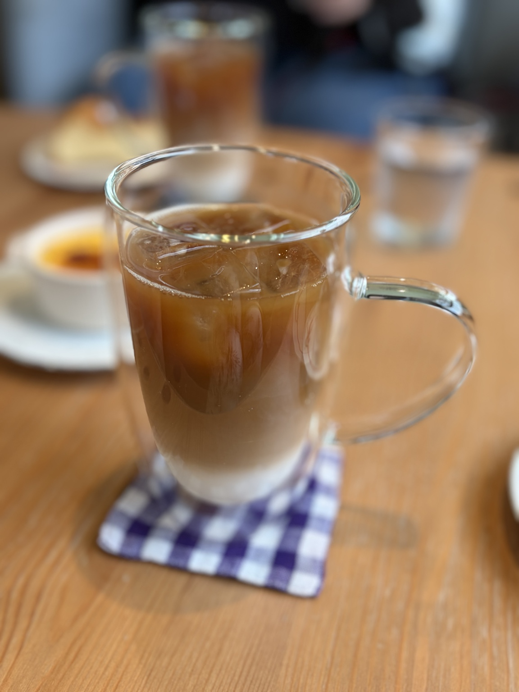
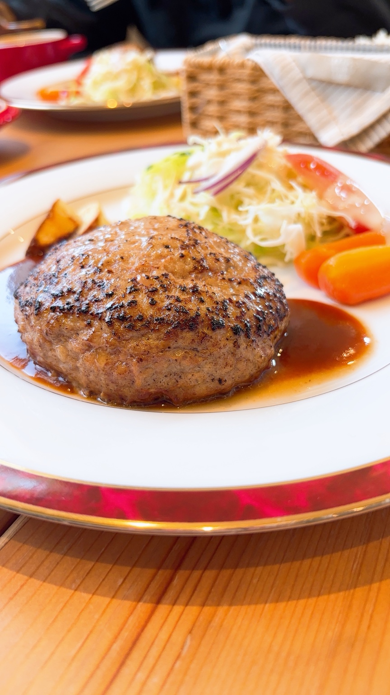
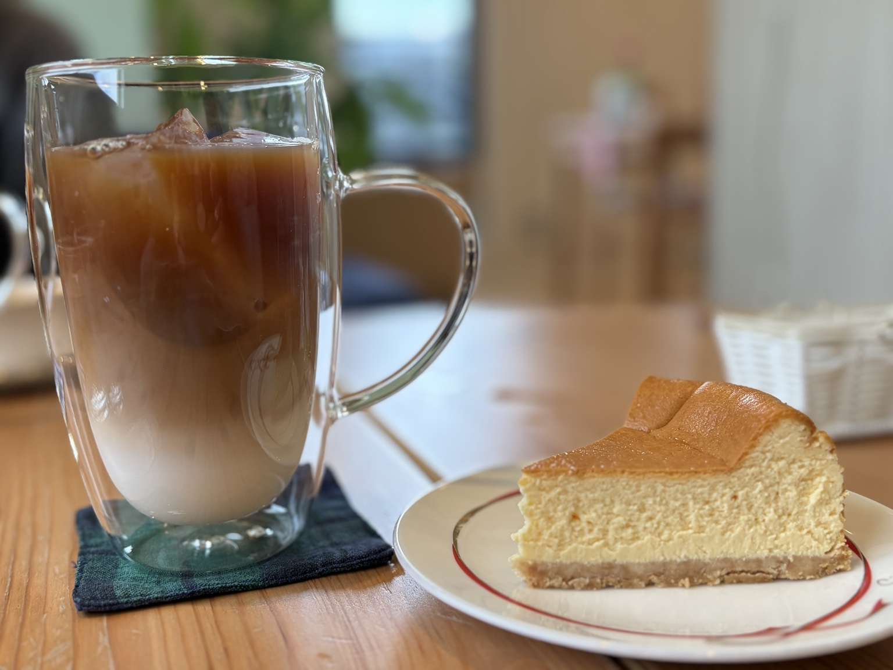
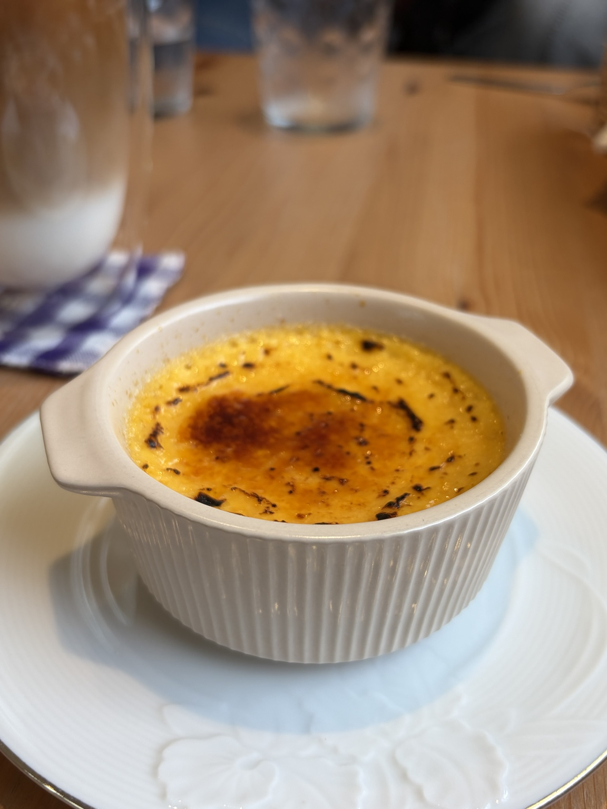

TURKISH RICE
トルコライス
カレーチャーハン、カツ、ナポリタン、サラダを一皿に。
A PLACE TO SLOW DOWN
しっかり食べたいランチの日も、コーヒーと甘いものだけの日も。木のぬくもりを感じる店内で、気負わず、思い思いの時間を。

FOOD
長崎らしいトルコライスをはじめ、ハンバーグやパスタ、カレーなど。カフェでありながら、食事を目当てに訪れたくなる一皿を。

カレーチャーハン、カツ、ナポリタン、サラダを一皿に。

洋食屋さんのような満足感を、カフェの空気の中で。
※掲載メニュー・価格は変更となる場合があります。最新情報は店舗へご確認ください。
COFFEE & SWEETS
コーヒーと、チーズケーキやブリュレ。ランチのあとにも、午後のひと休みにも。ゆっくりした時間の続きをどうぞ。


SWEETS 食後にうれしい、香ばしいブリュレ。
WHAT PEOPLE SAY
「ゆったりできる」 公開されている口コミで多く挙げられているポイント
「おしゃれな雰囲気」 店内の居心地を評価する声も
「トルコライスがおいしい」 サクサクのカツや食後のコーヒーを評価する口コミも
※口コミ内容をもとに要約・編集したサンプル表現です。
ACCESS
〒852-8035
長崎県長崎市油木町43-14
営業時間は変更される場合があります。ご来店前に最新情報をご確認ください。